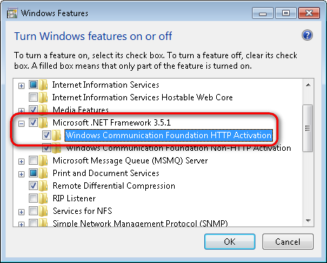

Configuring Windows Communication Foundation
This page describes the installation and configuration process of Windows Communication Foundation (WCF). You need to configure WCF to use the following Kentico features:
WCF overview
WCF is a component of the .NET Framework that provides a programming model for building service-oriented multi-platform applications that communicate across the web. For more information about the technology, visit the What Is Windows Communication Foundation page in the Microsoft documentation.
Installing WCF
WCF is automatically installed with .NET 3.0 and any higher version. However, you still need to install the WCF HTTP Activation feature yourself.
When hosting Kentico on Microsoft Azure Web Apps or Cloud Services, WCF and the HTTP Activation feature are installed and enabled by default.
Go to Control Panel -> Programs and Features in Windows and click Turn Windows features on or off in the left menu.
Windows 7 / Windows Server 2008
Under the Microsoft .NET Framework 3.5 item, select the Windows Communication Foundation HTTP Activation check box.

Click OK to start the installation.
Error: "Could not load type 'System.ServiceModel.Activation.HttpModule' from assembly 'System.ServiceModel"
If your application returns the above error after enabling HTTP Activation, you need to manually register the correct version of ASP.NET.
See https://msdn.microsoft.com/en-us/library/hh169179%28v=nav.70%29.aspx for detailed information.
Windows 8 / Windows Server 2012
Expand the .NET Framework 4.5 Advanced Services item.
Make sure that the WCF Services -> HTTP Activation feature is installed.
Windows 10 / Windows Server 2016
Expand the .NET Framework 4.6 Advanced Services item.
Make sure that the WCF Services -> HTTP Activation feature is installed.
The system installs WCF on your computer.
After installing WCF on a machine that already had ASP.NET installed, you may need to re-register ASP.NET into IIS.
Configuring WCF services to use SSL
WCF services in Kentico applications are defined as service endpoints. By default, the service endpoints point to HTTP bindings. To use the services with SSL enabled, you must point the service endpoints to secure HTTPS bindings. Service endpoints and bindings are defined in local, application-specific, web.config files. You configure each service separately.
Locate the application-specific web.config file according to the following table:
Application
Web.config location
Chat
/CMSModules/Chat
Marketing automation
/CMSModules/Automation
Workflow
/CMSModules/Workflows
Open the web.config file and uncomment the secure endpoint code. The endpoint is defined in the configuration/system.serviceModel/services section.
Example - commented HTTPS (secure) endpoint for Workflow<!--<endpointname="Secure"address=""behaviorConfiguration="WorkflowDesignerEndpointBehavior"binding="webHttpBinding"bindingConfiguration="WorkflowDesignerSecureBinding"contract="CMS.WebServices.IWorkflowDesignerService"/>-->(Optional) If you don't want the service to use the non-secure HTTP, comment out (or delete) the non-secure endpoint code.
Example - HTTP (non-secure) endpoint for Workflow<endpointname="Public"address=""behaviorConfiguration="AutomationDesignerEndpointBehavior"binding="webHttpBinding"contract="CMS.WebServices.IWorkflowDesignerService"/>
The system now communicates with the services defined in the services section using the specified endpoints.
Developing custom WCF services
If implementing custom WCF services within the Kentico web project, you need to manually initialize the Kentico application before calling the Kentico API within the service code.
Otherwise you may encounter errors if the first request that starts the application is destined for the WCF service. The standard initialization does not occur, because WCF requests are not processed by the ASP.NET HTTP runtime. For more information, see the WCF Services and ASP.NET article.
You can initialize the Kentico application by calling the CMS.DataEngine.CMSApplication.Init method, for example within the constructor of your WCF service class. See Using the Kentico API externally to learn more.